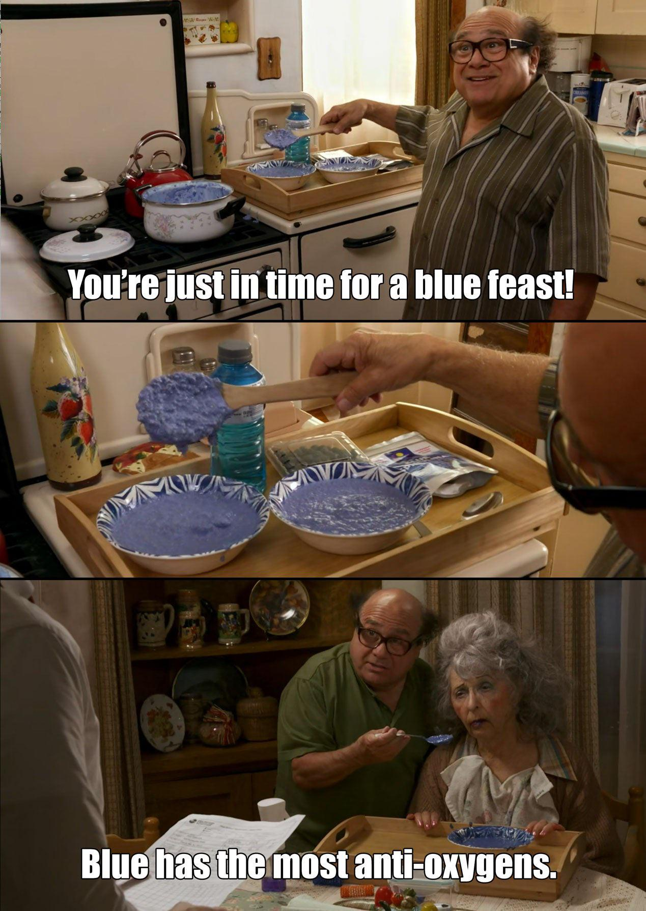

Probably the simplest way to motivate phenomenology
is to poke at a private, subjective experience and question its uniqueness.
In my experience, most people are pretty curious if their brain is mapping sensory inputs to the same qualia as other brains.
"Do we all see the same blue?", we all wonder at one point or another.
Furthermore, why do we have these internal representations of blue at all?
Why are we not like computers, silently computing and detecting patterns, interacting with the quantitative sensory data without requiring any qualitative, subjective experience?
At least in my opinion, I think we can be quite certain that a simple algorithm like k-means clustering is perfectly capable of classifying colors without experiencing the colors in a way similar to biological organisms.
But let me take it one step further: is our experience of blue only as a color? Or might blue be a mood as well, and even a flavor? If you've ever eaten a blue candy—blue raspberry, blue ice pop, blue sports drink—you know exactly what I mean. There's a distinct quality to "blue flavor" that has nothing to do with the actual taste of blueberries or any natural blue food. It's artificial, sweet, somehow cool and sharp. When you taste it, you just know it's blue. This isn't just marketing; or, at least, I don't think it is. It's something deeper about how our brains map sensory experiences.
Blue isn't just a wavelength of light. It's a feeling. It's the world's most popular favorite color. It's associated with calmness, coolness, tranquility. We describe sadness as "feeling blue." We use it to evoke trust (think of corporate logos). There's something intrinsically blue about blue that goes beyond mere color perception. These aren't arbitrary cultural constructs (though culture certainly plays a role). There's something about the quale of blue—the raw, subjective experience of blueness—that carries these associations with it.
Andrés Gómez-Emilsson of the Qualia Research Institute has written extensively about synesthesia—the phenomenon where stimulation of one sensory pathway leads to automatic, involuntary experiences in another sensory pathway. Some people see colors when they hear music. Others taste words. Still others see numbers as having inherent colors.
Synesthesia shows us that the mapping from sensory inputs to qualia (subjective experiences) is not clean and modular. Our brains don't neatly separate "vision" from "taste" from "sound." These are high-level categories we impose on what is actually a deeply interconnected, messy web of neural processing.
Gómez-Emilsson also discusses phenomena like after-images—when you stare at a red square and then look at a white wall, you see a cyan square. This isn't "real" in the sense of corresponding to external light wavelengths, but it's absolutely real as a quale. Your brain generates the experience of cyan even though no cyan light is entering your eyes.
Think about other cross-modal descriptions we use without a second thought: "This music sounds bright." "Her voice is warm." "This cheese tastes sharp." "This wine has body." These aren't metaphors in the traditional sense. They're pointing to genuine structural similarities between different qualia. There's something about the shape of the experience that crosses sensory modalities. Our brains build a unified experiential space, not isolated sensory channels.
We like to imagine distinct boundaries between sensory experience, but our language betrays us.
When we say "blue flavor," we're not being imprecise—we're reaching for the closest linguistic handle to something that fundamentally resists verbal description.
And, in this sense, we're all mild synesthetes.
The fact that most people agree on what "blue flavor" means suggests that cross-modal associations aren't rare anomalies—they're fundamental to how perception works.

Next time you taste a blue candy, pay attention to the experience. Notice how it's not just sweet, not just fruity—there's a blueness to it that you can feel. Notice how your brain doesn't think this is weird. Of course blue has a flavor. Of course red is warm and blue is cool. Of course sharp sounds exist alongside sharp tastes.
These cross-modal associations reveal the hidden structure of consciousness—the way our brains weave together disparate sensory streams into a unified, coherent experiential reality. The question isn't whether we all see the same blue. The question is: why does blue feel the way it does, and why can we taste it?
Eliminative Materialists like Daniel Dennett put forward that subjective experience does not exist at all and is only self-reported by biological organisms. We are under a delusion, Dennett would say, that we are having these experiences; and, really, these delusions are just useful fictions employed by our brain's various computational processes. Personally, while interesting, I think this idea misses the point. Consciousness is certainly generated by the brain (as opposed to being an absolute reflection of the external world constructed through sensory data), but I do not believe that this fact should alter its ontological status.